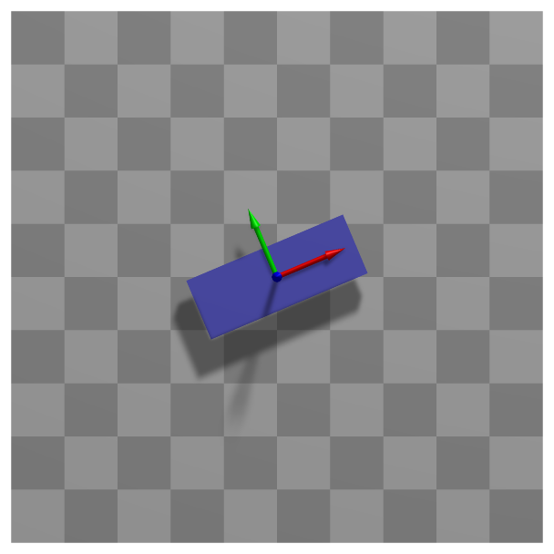

ObjectRigidBody2D
A 2D rigid body which is attached to a rigid body 2D node. The body obtains coordinates, position, velocity, etc. from the underlying 2D node.


Simpler: mbs.CreateRigidBody adds this item, with what it needs, in one call.
Interface
Python names:
ObjectRigidBody2DorRigidBody2D, andVRigidBody2Dfor its visualizationNodes it takes: NodeRigidBody2D, NodePoint2DSlope1
Body markers that can be placed on it: MarkerBodyMass, MarkerBodyPosition, MarkerBodyRigid
Parameters
The parameters of the item; in a dictionary, its type is ‘RigidBody2D’:
name |
type |
size |
default |
description |
|---|---|---|---|---|
name |
String |
‘’ |
objects’s unique name |
|
mass |
UReal |
0. |
(symbol: \(m\)) mass [SI:kg] of rigid body |
|
inertia |
UReal |
0. |
(symbol: \(J\)) inertia [SI:kgm\(^2\)] of rigid body w.r.t. reference point; this is equal to the center of mass, if centerOfMass = 0 |
|
centerOfMass |
Vector2D |
2 |
[0.,0.] |
(symbol: \(\LU{b}{\bv_{COM}}\)) local position of COM relative to the body’s reference point; if the vector of the COM is [0,0], the computation will not consider additional terms for the COM and it is faster |
nodeNumber |
NodeIndex |
invalid (-1) |
(symbol: \(n_0\)) node number (type NodeIndex) for 2D rigid body node |
|
visualization |
VObjectRigidBody2D |
parameters for visualization of item |
Renamed parameters, still taken with a DeprecationWarning: physicsMass (deprecated since 1.12.258, removed in 2031): use mass; physicsInertia (deprecated since 1.12.258, removed in 2031): use inertia; physicsCenterOfMass (deprecated since 1.12.258, removed in 2031): use centerOfMass.
Visualization parameters
The parameters of VObjectRigidBody2D, given as visualization:
name |
type |
size |
default |
description |
|---|---|---|---|---|
show |
Bool |
True |
set true, if item is shown in visualization and false if it is not shown |
|
graphicsDataUserFunction |
ObjectRigidBody2DGraphicsDataUserFunction |
0 |
A Python function which returns a bodyGraphicsData object, which is a list of graphics data in a dictionary computed by the user function; the graphics elements need to be defined in the local body coordinates and are transformed by mbs to global coordinates |
|
graphicsData |
BodyGraphicsData |
Structure contains data for body visualization; data is defined in special list / dictionary structure |
Drawing
Drawn as all bodies; its graphicsData in the body frame, and what its graphicsDataUserFunction returns; with a contour plot (contour.rigidBodiesColored) colored by the value at the reference point.
Output variables
Available as OutputVariableType in sensors, Get...Output() and other functions:
output variable |
symbol |
description |
|---|---|---|
Position |
\(\LU{0}{\pv}\cConfig(\pLocB) = \LU{0}{\pRef}\cConfig + \LU{0}{\pRef}\cRef + \LU{0b}{\Rot}\pLocB\) |
global position vector of body-fixed point given by local position vector \(\pLocB\) |
Displacement |
\(\LU{0}{\uv}\cConfig + \LU{0b}{\Rot}\pLocB\) |
global displacement vector of body-fixed point given by local position vector \(\pLocB\) |
Velocity |
\(\LU{0}{\vv}\cConfig(\pLocB) = \LU{0}{\dot\uv}\cConfig + \LU{0b}{\Rot}(\LU{b}{\tomega} \times \pLocB\cConfig)\) |
global velocity vector of body-fixed point given by local position vector \(\pLocB\) |
VelocityLocal |
\(\LU{b}{\vv}\cConfig(\pLocB) = \LU{b0}{\Rot} \LU{0}{\vv}\cConfig(\pLocB)\) |
local (body-fixed) velocity vector of body-fixed point given by local position vector \(\pLocB\) |
RotationMatrix |
\(\mathrm{vec}(\LU{0b}{\Rot})=[A_{00},\,A_{01},\,A_{02},\,A_{10},\,\ldots,\,A_{21},\,A_{22}]\cConfig\tp\) |
vector with 9 components of the rotation matrix (row-major format) |
Rotation |
\(\theta_{0\mathrm{config}}\) |
scalar rotation angle of body |
AngularVelocity |
\(\LU{0}{\tomega}\cConfig\) |
global 3D angular velocity vector of body |
AngularVelocityLocal |
\(\LU{b}{\tomega}\cConfig\) |
local (body-fixed) 3D angular velocity vector of body |
Acceleration |
\(\LU{0}{\av}\cConfig(\pLocB) = \LU{0}{\ddot\uv} + \LU{0}{\talpha} \times (\LU{0b}{\Rot} \pLocB) + \LU{0}{\tomega} \times ( \LU{0}{\tomega} \times(\LU{0b}{\Rot} \pLocB))\) |
global acceleration vector of body-fixed point given by local position vector \(\pLocB\) |
AccelerationLocal |
\(\LU{b}{\av}\cConfig(\pLocB) = \LU{b0}{\Rot} \LU{0}{\av}\cConfig(\pLocB)\) |
local (body-fixed) acceleration vector of body-fixed point given by local position vector \(\pLocB\) |
AngularAcceleration |
\(\LU{0}{\talpha}\cConfig\) |
angular acceleration vector of body |
AngularAccelerationLocal |
\(\LU{b}{\talpha}\cConfig = \LU{b0}{\Rot} \LU{0}{\talpha}\cConfig\) |
local angular acceleration vector of body |
KineticEnergy |
\(T = \frac{1}{2} m\, \LU{0}{\vv}\tp\LU{0}{\vv} + m\, \LU{0}{\vv}\tp (\LU{0}{\tomega} \times \LU{0b}{\Rot}\LU{b}{\bv_{COM}}) + \frac{1}{2} J \omega^2\) |
kinetic energy of the body, with the velocity \(\LU{0}{\vv}\) of its reference point and the inertia w.r.t. it; localPosition must be \([0,0,0]\) |
PotentialEnergy |
\(V = 0\) |
the body has no elastic energy; gravity and other loads are not part of it (see exudyn.advancedUtilities.LoadPotentialEnergy) - the value stays the same when a body gets a built-in gravity; localPosition must be \([0,0,0]\) |
Detailed description
Definition of quantities
intermediate variables |
symbol |
description |
|---|---|---|
reference point |
\(\pRefG\cConfig = \LU{0}{\pv}(n_0)\cConfig\) |
position of the reference point, provided by node \(n_0\); the center of mass only if \(\LU{b}{\bv_{COM}} = \Null\) |
displacement |
\(\LU{0}{\uv}\cConfig = [q_0,\;q_1,\;0]\cConfig\tp\) |
displacement of the reference point |
velocity |
\(\LU{0}{\vv}\cConfig = [\dot q_0,\;\dot q_1,\;0]\cConfig\tp\) |
velocity of the reference point |
rotation |
\(\theta_{0} = \psi_0(n_0)\cRef + \psi_0(n_0)\cConfig\) |
rotation about the \(z\)-axis |
rotation matrix |
\(\LU{0b}{\Rot}\cConfig = \LU{0b}{\Rot}(n_0)\cConfig\) |
as given by the node |
local position |
\(\pLocB = [\LU{b}{b_0},\,\LU{b}{b_1},\,0]\tp\) |
local position as used by markers or sensors |
angular velocity |
\(\LU{0}{\tomega}\cConfig = [0,\,0,\,\dot\theta_0]\tp\) |
rotation velocity about \(z\) |
applied forces and torques |
\(\LU{0}{\fv}_a = [f_0,\;f_1,\;0]\tp\), \(\LU{0}{\ttau}_a = [0,\;0,\;\tau_2]\tp\) |
from loads, connectors and joints |
Equations of motion
With centerOfMass \(= \Null\):
With a center of mass \(\vp{b_x}{b_y} = \LU{0}{\bv_{COM}}\) away from the reference point - \(J\) is the moment of inertia about the reference point -
A LoadCoordinate on coordinate 2 of the node adds a torque \(\tau_2\).
Marker interfaces
The position Jacobian depends on the local position,
and the rotation Jacobian takes the \(z\)-component of a torque,
Userfunction: graphicsDataUserFunction(mbs, itemNumber)
A user function, which is called by the visualization thread in order to draw user-defined objects.
The function can be used to generate any BodyGraphicsData, see Section GraphicsData.
Use exudyn.graphics functions, see Section Module: graphics, to create more complicated objects.
Note that graphicsDataUserFunction needs to copy lots of data and is therefore
inefficient and only designed to enable simpler tests, but not large scale problems.
For an example for graphicsDataUserFunction see ObjectGround, ObjectGround.
arguments / return |
type or size |
description |
|---|---|---|
|
MainSystem |
provides reference to mbs, which can be used in user function to access all data of the object |
|
Index |
integer number of the object in mbs, allowing easy access |
return value |
BodyGraphicsData |
list of |
Mini example
node = mbs.AddNode(NodeRigidBody2D(referenceCoordinates = [1,1,0.25*np.pi],
initialCoordinates=[0.5,0,0],
initialVelocities=[0.5,0,0.75*np.pi]))
mbs.AddObject(RigidBody2D(nodeNumber = node, mass=1, inertia=2))
#assemble and solve system for default parameters
mbs.Assemble()
mbs.SolveDynamic()
#check result
exu.sys['testResult'] = mbs.GetNodeOutput(node, exu.OutputVariableType.Position)[0]
exu.sys['testResult']+= mbs.GetNodeOutput(node, exu.OutputVariableType.Coordinates)[2]
#final x-coordinate of position shall be 2, angle theta shall be np.pi
Examples (Ex) and TestModels (TM) that show this item, with weblink to github: tutorialRigidBody.py (Ex), tutorialRigidBodyCreate.py (Ex), rigidPendulum.py (Ex)